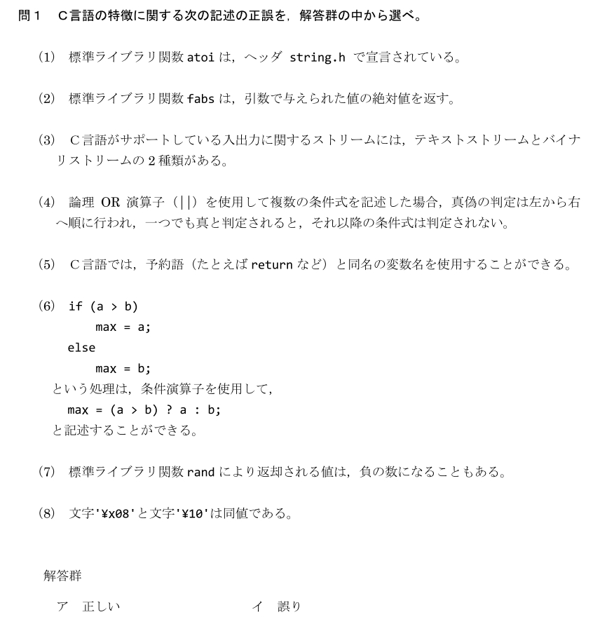
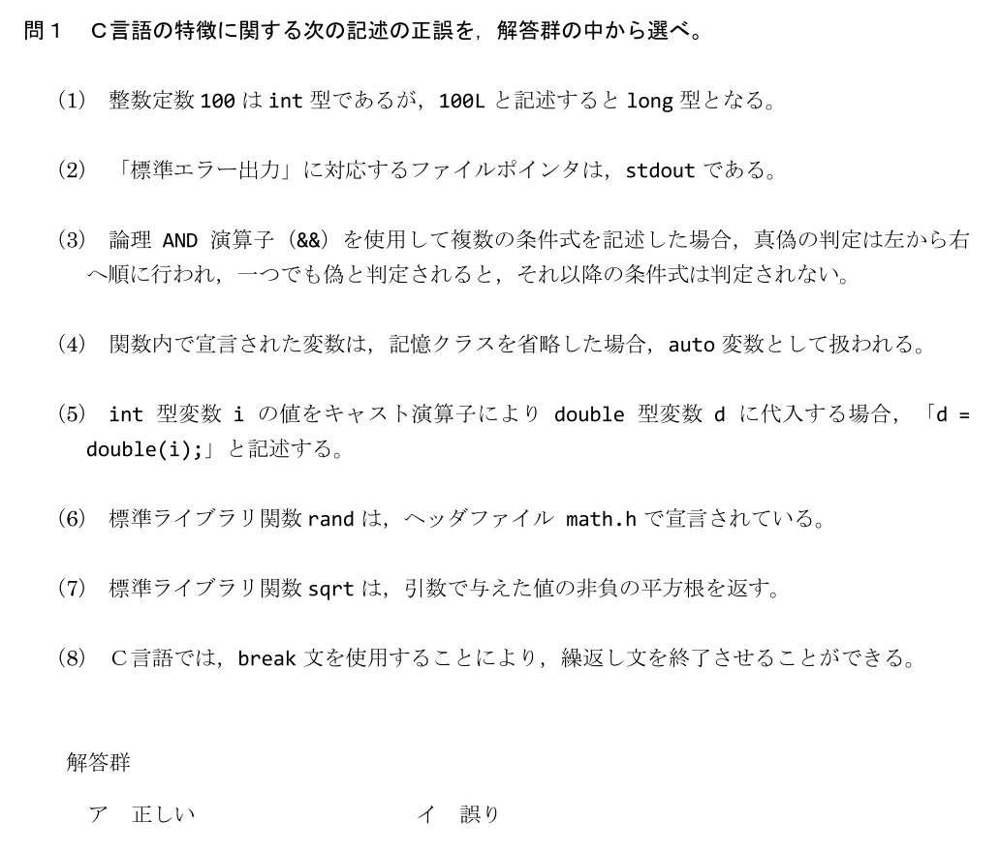
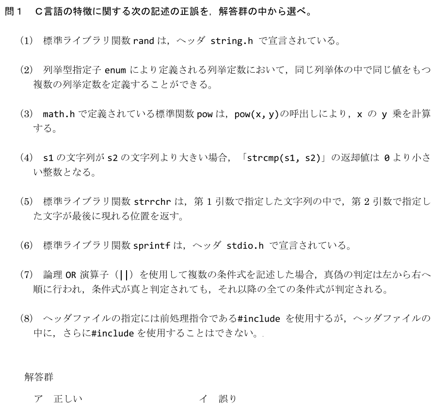
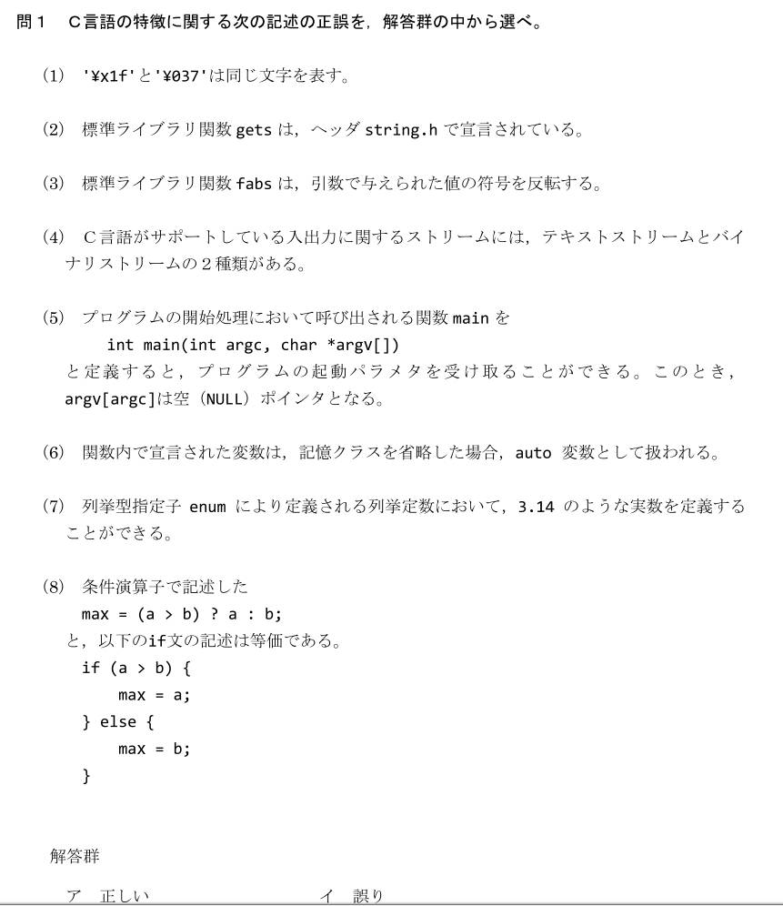
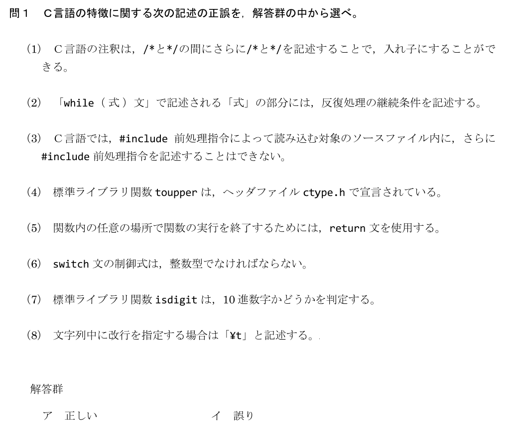
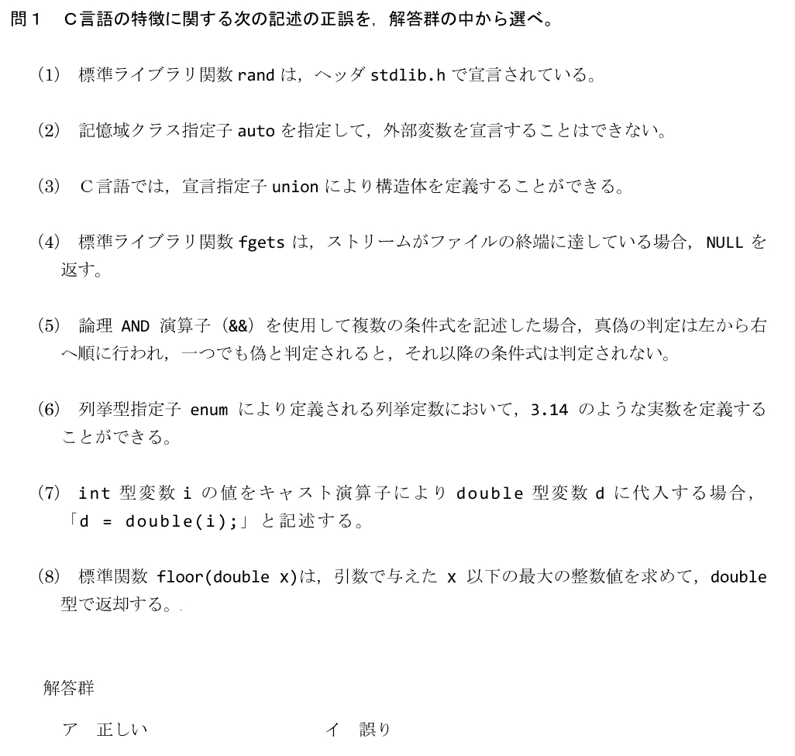
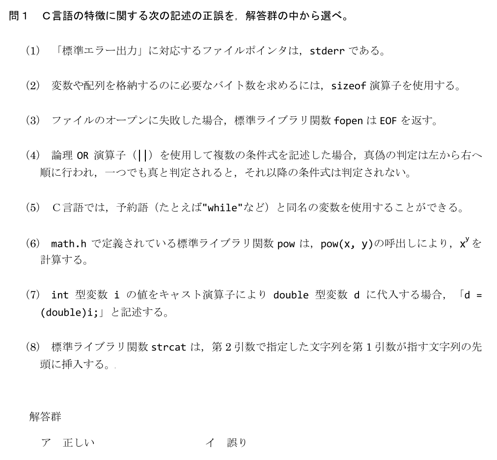
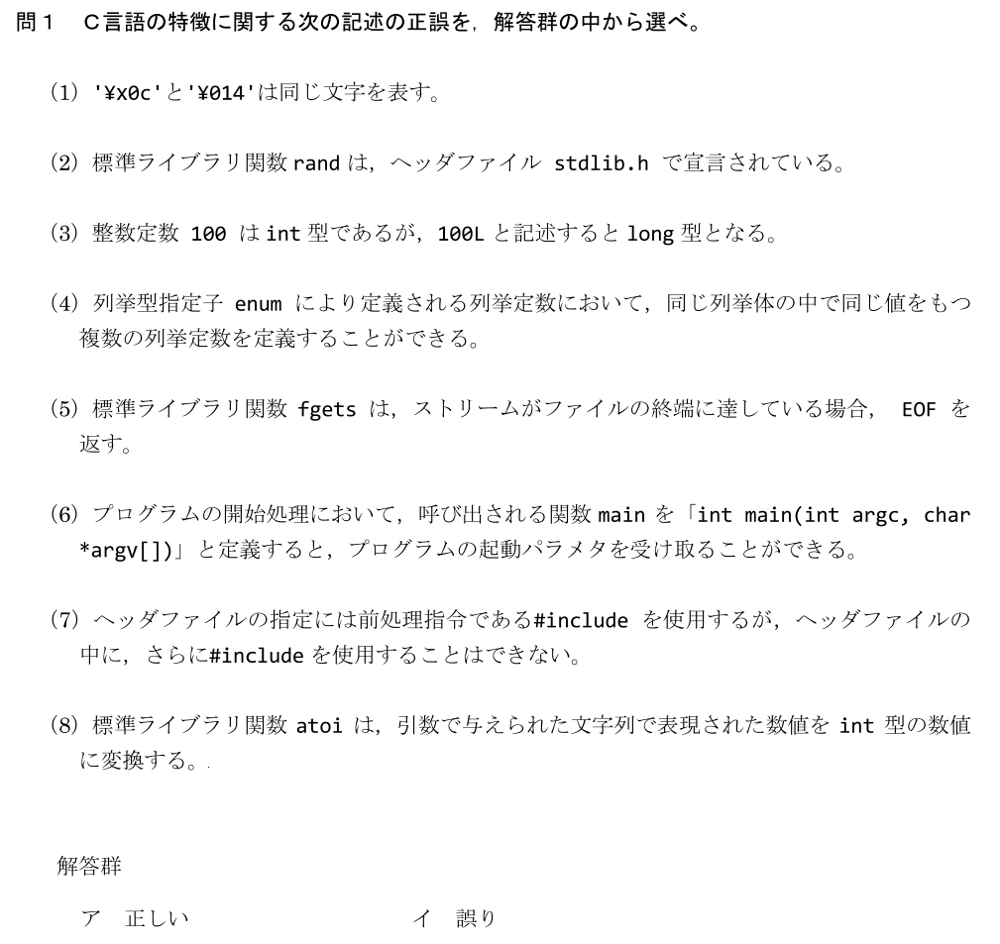
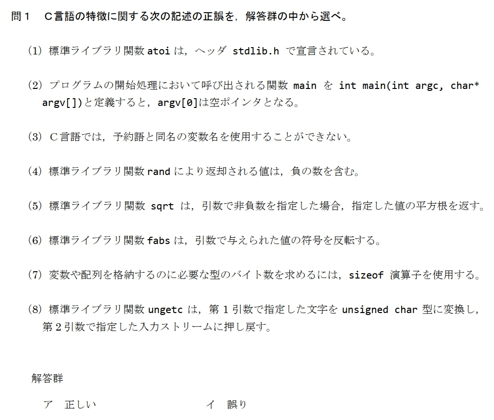

このフォルダは、サーティファイ「C言語プログラミング能力認定試験 2級」の対策資料です。3級の基礎の上に、文字列・関数・変数のスコープ・ビット演算・ポインタ・ファイル処理といった実戦的なテーマと、標準ライブラリ関数の知識が問われます。
過去問の問1は、短い知識小問の集まりです。第53〜65回を分析すると、毎回ほぼ同じテーマが繰り返し出ています。下表で「自分の弱点テーマ」を見つけ、対応する章で補強しましょう。
| テーマ | 関連する章 | 過去問での出題（回-小問） |
|---|---|---|
| どの関数がどのヘッダか | 07章 | 53(1) 54(1) 56(1)(3)(6) 59(1) 60(2) 62(1) 63(8) 65(1) |
| 文字列関数（strcpy/strcmp 等） | 01・07章 | 56(4)(5) 60(8) |
| 数値変換・演算関数（atoi / math） | 07章 | 53(6) 54(3) 56(3) 60(6) 63(8) |
| 標準入出力・ファイル処理 | 06章 | 53(8) 54(4) 56(8) 59(3) 60(5) |
| メモリサイズと文字列長の違い（sizeof / strlen） | 01・07章 | 53(7) 59(2) |
| 識別子の重複（スコープ） | 03章 | 53(4) 54(6) 60(8) 62(2) 63(2) |
| 定数・エスケープ文字 | 01章 | 53(1) 54(1) 59(8) 60(1) |
| ストリーム（stdin / stdout / stderr） | 06・07章 | 54(3) 57(4) |
| 前処理命令 #include | 07章 | 56(8) 59(7) 60(7) |
| 列挙型 enum | 補足 | 53(2) 54(7) 57(6) 60(4) 62(6) |
| 予約語と変数名 | 補足 | 53(3) 54(5) 56(2) 60(5) |
| キャスト（型変換） | 補足 | 54(5) 60(7) 62(7) |
条件演算子 ?: | 補足 | 54(6) 57(8) |
| 論理演算子の評価順（短絡評価） | 補足 | 53(7) 54(4) 56(7) 59(4) 60(4) |
| switch 文 | 補足 | 57(6) |
| ctype.h（is○○ / to○○） | 補足（3級27-4） | 57(4)(7) |
各回の問1（知識小問）を集めました。まず時間を計らずに全部解いて、上の早見表でテーマごとの正答率を確かめましょう。答え合わせは、各テーマを扱う章（01〜07）の解説と照らし合わせると効果的です。









早見表で「補足」とした、01〜07 では扱わないが問1で出るテーマの要点です。
Q1. 論理演算子の短絡評価について、次のコードで 10 / a はどうなるか。
int a = 0;
if (a != 0 && 10 / a > 1) {
/* ... */
}正解：イ
&& は左側が偽なら右側を評価しない（短絡評価）。ここでは a != 0 が偽なので 10 / a は実行されず、ゼロ除算は起きない。|| は逆に左が真なら右を評価しない。
Q2. 条件演算子を使った x = (a > b) ? a : b; で、x に入るものはどれか。
正解：ウ
条件 ? 真のとき : 偽のとき。a > b が真なら a、偽なら b。つまり大きい方（max）が入る。
Q3. enum Color { RED, GREEN, BLUE }; のとき、GREEN の値はどれか。
正解：イ（1）
列挙型は既定で先頭が 0、以降 1 ずつ増える。RED=0, GREEN=1, BLUE=2。途中で = 値 を指定するとそこから振り直される。
Q4. (double)5 / 2 の結果はどれか。
正解：ウ（2.5）
キャスト (double)5 で 5 が実数 5.0 になり、5.0 / 2 は実数の割り算で 2.5。キャストが無い 5 / 2 は整数同士なので商の 2（小数切り捨て）になる点と区別すること。